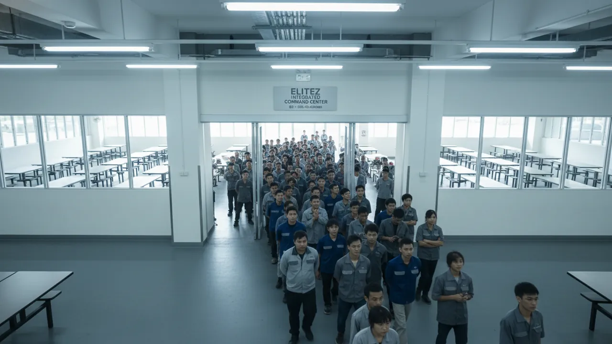
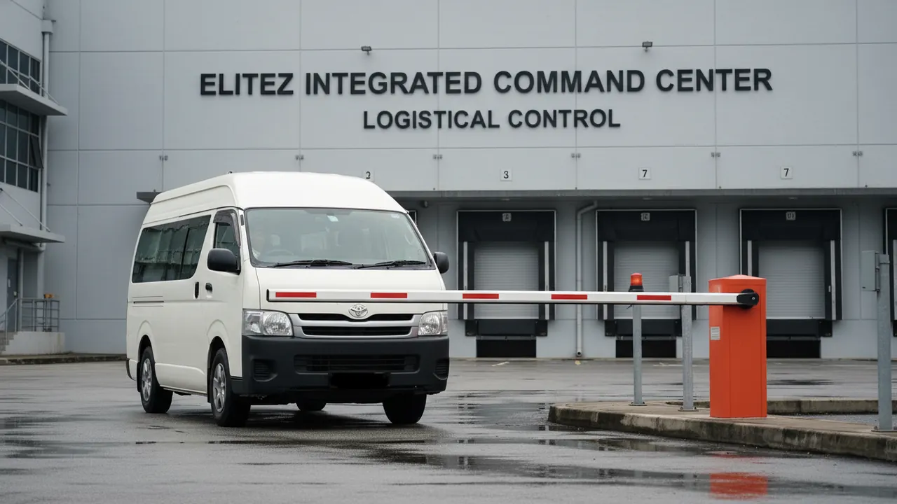
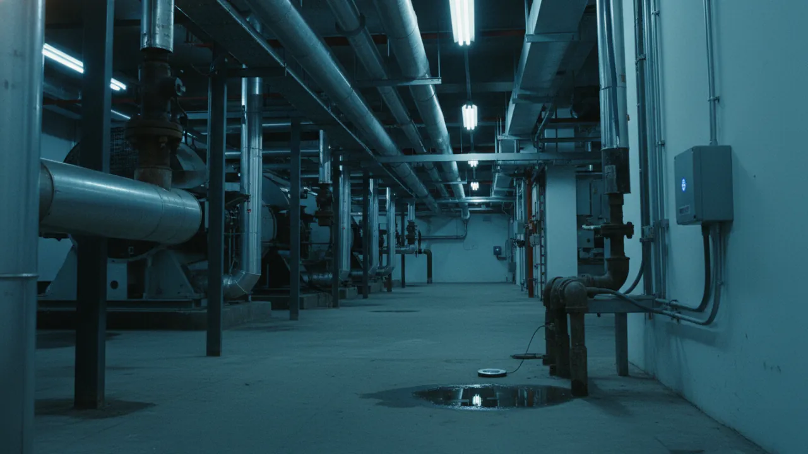
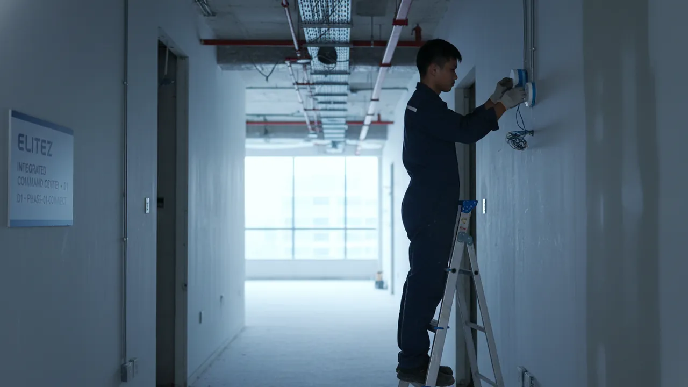

Signal
Detect
A camera or IoT sensor at a field site registers an event.
The Operating Model — How the Command Centre Runs
The Services page lists what the command centre delivers. This page is how it runs — a multi-tenant operating model that already runs seven completely different Elitez field operations from one node, and the alert-workflow engine behind every one of them.
7
Live divisions run
6
Stage operating loop
99%
AI detection precision
1
Shared command node
The Operating Model
The command centre is not a single-purpose monitor. It is built the way a managed operations provider builds one — as a multi-tenant platform. Each operation runs as an isolated tenant on shared infrastructure: its own ruleset, telemetry and operator views, drawing on one common analytics, dispatch and reporting engine. The cost of an enterprise-grade command centre is carried across every operation, not by each alone.
Seven operations — each an isolated tenant
Shared Infrastructure
Elitez Command Node
One shared operating engine
AI Analytics
Parallel computer-vision models
Dispatch
Geo-routed response & IoT control
Reporting
Compliant, automated records
The model rests on four principles
Each operation has its own ruleset, telemetry and dashboards. No cross-bleed between divisions or clients.
Every site across every operation surfaces on one video wall and one common operating picture.
One analytics, dispatch and reporting engine — amortised across every tenant, not rebuilt per operation.
Operators and clients see only their authorised scope — division, site or contract.
Seven Live Operations
The proof of a multi-tenant model is range. The command centre already runs guarding, safety inspection, retail promotion, hospital crowd flow, work-at-height painting, merchandising and aircraft maintenance — each with its own workflow. Select a division.
The Workflow Engine
Whatever the division, every event runs the same loop — from a field sensor to a closed, logged incident, with a human operator in the decision seat.
A camera or IoT sensor at a field site registers an event.
Edge-AI matches it against that division's ruleset — intrusion, PPE breach, queue surge, access exception.
The relevant feed pops onto the video wall with a tactical alert; routine noise is filtered out.
A human operator verifies the alert and sets the response — the operator stays in the loop.
The nearest officer is geo-routed; IoT controls — EM-lock, gantry, two-way audio — are actioned remotely.
The incident is timestamped to a PDPA-compliant record, feeding that division's automated reporting.
The AI Analytics Layer
Parallel computer-vision models run on edge processors at each site — multiple detections on the same feed, classified locally for low latency, at a 95–99% precision that keeps false alerts down.
Detection 01
Line-crossing, unauthorised access and perimeter breach during non-operational hours.
Detection 02
Missing helmets, vests or fall-arrest harnesses on industrial and scaffolding sites.

Detection 03
People-counting and density heat-mapping to flag bottlenecks and over-occupancy.
Detection 04
Facial-recognition gantry exceptions — tailgating, unrecognised faces, flagged individuals.

Detection 05
Vehicle identification at gantries and loading bays for access and audit logs.
Detection 06
Early smoke and fire detection and site-specific hazard flags routed for immediate response.
The Site Control Plane
The analytics layer above tells the node what it sees. The IoT control plane is what it acts on. Every connected device on a site — a gate, a light, a sensor, a lock — becomes a live control on the operator's console, so an event is answered in seconds without anyone on site. The plane is device- and vendor-agnostic: it connects the equipment a site already runs, rather than forcing a rip-and-replace.
What the node controls
Switch, dim and schedule lighting and powered circuits — and trigger lighting as an active deterrent the moment an alert fires.
Open, close or lock down vehicle gates, boom barriers and pedestrian gantries remotely — including a one-action site lockdown.
Release or secure doors, turnstiles and electromagnetic locks on operator verification, with every action attributed and logged.

Water-leak, power, temperature, air-quality, occupancy and lift-status telemetry — each fault raised as a tracked event in the loop.
Scheduled camera tours driven by video analytics walk every zone on a fixed round — a patrol with no officer on the ground.
Every device's live state on one pane — a working digital twin of the site that the building owner can be given a scoped view of.
How a Site Comes Online
A site is never switched to remote control overnight. Each phase is commissioned, tested and signed off before the next is enabled.

Sensors and cameras are ingested into the dashboard. Read-only — visibility first, no actuation.
Operators actuate gates, lights and locks remotely — under role-based access and a full audit trail.
A rules engine runs pre-agreed responses and scheduled virtual patrols, with the operator confirming.
Accumulated sensor history drives predictive maintenance and energy optimisation across the site.
Control Held to a Safety Standard
Remote actuation carries real safety and security weight, so every control is governed: role-based access and an audit trail on every action, fail-safe device defaults if a link drops, an on-site manual override that always remains, and segmented operational-technology networks with authenticated devices. Occupancy and video data are handled to PDPA standards.
Why This Is The Capability
The seven divisions above are not a feature list — they are the proof. An operation that already coordinates work as different as a perimeter breach, a missing fall-arrest harness and a late retail clock-in is, by definition, built to absorb a new one. That versatility is the capability the command centre is selling.
Bring Us Your Operation
A walkthrough maps your field operation onto the command-centre operating model — and what it would take to run it as a tenant.